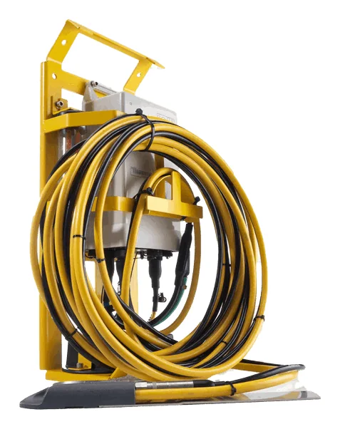
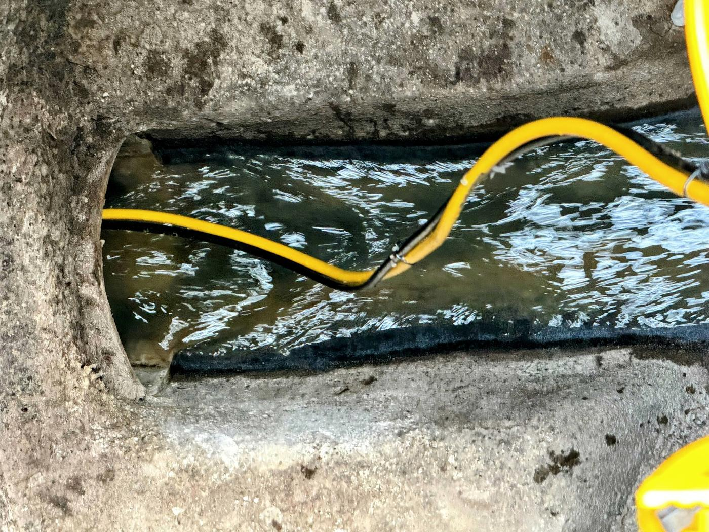

Area velocity flow meter
MSFM S2.5T
The area velocity flow meter our fleet runs on: battery powered, certified for Zone 0 and built for raw sewage.

The MSFM S2.5T is a self-contained, battery-powered flow meter for raw sewage, industrial effluent and stormwater. It works in combined sewers, storm sewers and open channels, with no weir or flume.
One sensor at the bottom of the pipe measures velocity, depth and water temperature. The meter works out the flow, logs every 1 to 60 minutes and sends its readings over 4G LTE.
It’s the meter our sewer flow fleet runs on, so the advice comes from the people who install it. Buy it, hire it, or have us run it for you.
High in the shaft, low in the pipe.
- The meter hangs high in the shaft, on the step irons or a fixing spike
- Its sensor sits on a stainless ring at the bottom of the pipe, facing into the flow
- One sensor measures velocity, depth and water temperature
- Flow is worked out in the meter and logged every 1 to 60 minutes
- Readings go out over 4G LTE, as often as every 15 minutes
How it goes in
Good data starts with the right spot in the pipe and a careful install.
- Sited away from bends and side inlets, where the flow runs straight
- In a round pipe, the sensor rides a stainless ring locked inside the pipe, with a scissor expander in larger pipes
- In a rectangular channel, it sits on a bracket about a third of the way across
- The cables are tied along the ring and taped smooth, so rag has nothing to catch on
- Once it’s in, the readings are checked against a reference velocity meter and a dip with a ruler

Where it works.
Sewer Flow Surveys
Short I&I studies and long-term programs in gravity sewers.
Inflow and Infiltration
Flow and water temperature together show where water gets in.
Combined Sewer Overflows
Flow in the sewer, with an ultrasonic level sensor at the overflow.
Trade Waste and Sampling
A pulse to a sampler each time a set volume has passed.
Common Questions
Do I need a weir or flume?
No. The MSFM S2.5T measures velocity and depth in the pipe or channel as it is, and keeps up as storms or production change the flow.
What pipes and channels does it suit?
Round pipes, and rectangular and trapezoidal channels. The meter works out the flow from its depth, velocity and the size you enter. For other shapes, ask us.
How long does the battery last?
The sensors run off a 12 V rechargeable lithium-ion pack: more than 15 weeks at 2-minute logging, or 30 weeks or more at 5-minute logging. The pack’s voltage is logged, so a swap can be planned before it runs low, and it changes on site with an Allen key. The logger has its own internal battery, with a typical life of five years.
Can it run a sampler?
Yes. It works out the flow on board and sends a pulse to an automatic sampler each time a set volume has passed, for flow-proportional sampling. In a hazardous area, the sampler must be certified too.
Where does the data go?
On an EDS program, the readings arrive in EDS FlowSense. The meter can also report to Detectronic’s own DetecData portal. It sends every 15 minutes, hourly, daily, weekly or monthly.
Can I hire one?
Yes. The MSFM S2.5T is in our hire fleet for temporary flow surveys. Or take Data as a Service: we choose the sites, install and maintain the meters, and deliver validated data.
Specifications
MSFM S2.5T in detail.
Velocity
| Type | Dual piezoelectric elements |
|---|---|
| Range | 0.03 to 4.00 m/s |
| Resolution | 1 mm/s |
| Linearity | ± 1 % |
| Accuracy | ± 2.5 % FS; ± 1 % in the calibrated range, 0.05 to 2.00 m/s |
Depth
| Type | Hydrostatic pressure |
|---|---|
| Range | 0 to 3.5 m |
| Resolution | 1 mm |
| Linearity | 0.1 % BSL |
| Accuracy | ± 0.2 % FS; ± 0.1 % in the calibrated range, 0.03 to 2.00 m |
Temperature
| Type | Current derived resistance bridge |
|---|---|
| Range | 0 to 50 °C |
| Accuracy | ± 1 °C |
Optional LIDoTT Level
| Type | Piezo-ceramic ultrasonic, temperature compensated |
|---|---|
| Range | 0 to 1.5 m |
| Accuracy | ± 2 mm |
Logging and Communications
| Logging interval | 1 to 60 minutes |
|---|---|
| Memory | 512k solid state, up to 60k per channel |
| Storage | Rotating, or until full |
| Network | 4G LTE (LTE-M and NB-IoT) |
| Reporting | Every 15 minutes, hourly, daily, weekly or monthly |
| Flow calculation | On board: circular, rectangular or trapezoidal channels |
| Pulse output | Flow proportional, for an automatic sampler |
Power
| Sensor battery | 12 V ATEX lithium-ion pack, rechargeable |
|---|---|
| Battery life | 30+ weeks at 5-minute logging; 15+ weeks at 2-minute |
| Battery pack life | 5 years typical |
| Logger battery | Internal lithium pack, user replaceable, 5 years typical |
Enclosure and Environment
| Operating temperature | −20 to 60 °C |
|---|---|
| Protection | IP68 / NEMA 6P |
| Connectors | IP68 Mil-spec |
| Dimensions | 530 × 213 × 150 mm maximum, with battery pack and frame |
| Weight | 8.5 kg with battery pack, frame and sensors on 10 m cables |
Approvals

| ATEX | Sira 19ATEX2255X |
|---|---|
| Marking | II 1G Ex ia IIB T4 Ga, Ta −40 to 60 °C |
| IECEx | IECEx SIR 19.0078X |
Figures from Detectronic’s datasheet. Battery life depends on the logging and reporting intervals. Full details are in the MSFM S2.5T datasheet.
Put an MSFM in your sewer.
Buy it, hire it, or have our crews run it for you. Tell us about your sites and we’ll come back with pricing and a plan.